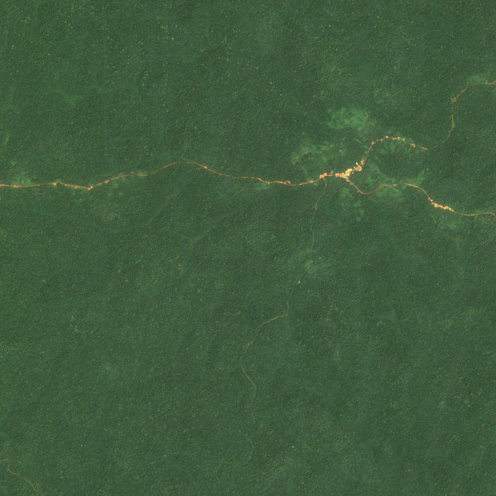

vignettes/biodivMapR_01.Rmd
biodivMapR_01.RmdbiodivMapR produces (spectral) diversity maps based on
(optical) images. The first step is then to have access to such image.
Many possibilities exist to access Sentinel-2 data. The R package sen2r is a good
option to access Sentinel-2 data if you want to develop a full workflow
with R.
biodivMapR
biodivMapR requires raster data as input, written as
image stacks (one file including all spectral bands / dimensions used
for the analysis). If optical data is processed, then the
spectral bands should be provided in the header file, in order
to allow computation of the continuum removal over the full spectrum. If
Continuum_Removal is set to FALSE, then the spectral
bands are not required.
In the chunk of code hereafter, an image subset is downloaded from a gitlab repository. The image is an ENVI raster including :
A binary file (which has no extension here).
A header file (with .hdr extension).
The header file is a text file including all necessary metadata which can be read with a text editor. It includes image dimensions, projection, and the name and central wavelength for each spectral band.
# load biodivMapR and useful libraries
library(biodivMapR)
library(utils)
library(stars)
# url for the S2 subset
url <- 'https://gitlab.com/jbferet/myshareddata/-/raw/master/biodivMapR_S2_Sample/RASTER/S2A_T33NUD_20180104_Subset'
# create a temporary directory (choose your own data directory)
tmpdir <- tempdir()
# name your binary raster with the same name as the online file
NameRaster <- 'S2A_T33NUD_20180104_Subset'
destfile <- file.path(tmpdir,NameRaster,fsep = '\\')
download.file(url = url, destfile = destfile, method = 'auto', quiet = FALSE, mode = "wb")
# url for the S2 subset header
urlhdr <- 'https://gitlab.com/jbferet/myshareddata/-/raw/master/biodivMapR_S2_Sample/RASTER/S2A_T33NUD_20180104_Subset.hdr'
# name your raster HDR with the same name as the binary raster, with .hdr extension
destfile_HDR <- get_HDR_name(destfile,showWarnings = FALSE)
download.file(url = urlhdr, destfile = destfile_HDR, method = 'auto', quiet = FALSE, mode = "w")The subset is obtained from tile T33NUD, acquired by Sentinel-2A satellite in 2018/01/04 over Cameroon.

Once the image is downloaded, it can be processed with
biodivMapR.
This example illustrates how to produce a proper HDR file for Sentinel-2 images when no header is paired with the main raster file.
This is the case of most GeoTiff raster images, for example.
To illustrate the procedure, let’s produce a GeoTiff image from the ENVI raster downloaded in the previous step.
# read ENVI file with stars
Stars_S2 <- stars::read_stars(destfile, along = 'band',proxy = FALSE)
# write it as a tiff image
# create a specific directory for the tiff image and name your raster
desttiff <- file.path(tmpdir,'TIFF',fsep = '\\')
dir.create(desttiff,showWarnings = FALSE)
destfiletiff <- file.path(desttiff,'S2_Subset.tif',fsep = '\\')
r <- write_stars(Stars_S2, dsn=destfiletiff, driver = 'GTiff', type='Int16')Then, let’s produce a header file for this GeoTiff image.
In order to simplify the process if you are using
Sentinel-2, Landsat-7, or
WorldView: a .hdr template is available. This
.hdr template is valid for L2A level images, so make sure
the spectral bands in your image correspond to the spectral bands
identified in the raster file (name and rank).
The bands in the GeoTiff raster are expected to be written as follows:
Sentinel-2 (possibility to differentiate Sentinel-2A and Sentinel-2B)
** band names = {band 02, band 03, band 04, band 05, band 06, band 07, band 08, band 08A, band 11, band 12}.
** wavelength = {496.6, 560.0, 664.5, 703.9, 740.2, 782.5, 835.1, 864.8, 1613.7, 2202.4}.
** bandwidth = {98, 45, 38, 19, 18, 28, 145, 33, 143, 242}.
Landsat-7
** band names = {B01, B02, B03, B04, B05, B07}
** wavelength = {485.0, 560.0, 660.5, 835.0, 1650.0, 2220.0}
WorldView
** band names = {Coastal, Blue, Green, Yellow, Red, Red Edge, NIR1, NIR2}
** wavelength = { 425.000, 480.000, 545.000, 605.000, 660.000, 725.000, 832.500, 950.000}
If spectral bands in your raster image differ from these aforementioned, please properly define these spectral bands.
Keep in mind that the bands should be ranked in ascending order (in terms of central wavelength).
# read ENVI file with stars
create_hdr(ImPath = destfiletiff, Sensor = 'SENTINEL_2A',
SpectralBands = NULL, BandName = NULL, WLunits = NULL)You can also produce a header file with your own parameters corresponding to the raster data.
# read ENVI file with stars
BandName <- c('band_02', 'band 03', 'band_04', 'band_05', 'band_06',
'band_07', 'band_08', 'band_08A', 'band_11', 'band_12')
SpectralBands <- c(496.6, 560.0, 664.5, 703.9, 740.2,
782.5, 835.1, 864.8, 1613.7, 2202.4)
WLunits <- 'Nanometers'
create_hdr(ImPath = destfiletiff, Sensor = 'MyOwnSensor',
SpectralBands = SpectralBands,BandName = BandName, WLunits = WLunits)A set of vector files is downloaded here, corresponding to circular plots identified in the raster. It will be used in the final step of the tutorial (How to perform validation?.).
The following code allows downloading the zipfile containing the vector data, and unzipping it in the same directory as the one including the raster data.
# library
library(zip)
# name zip file including plots located on the tile
destzip <- file.path(tmpdir,'S2A_T33NUD_Plots.zip',fsep = '\\')
# url for the zip file
url <- 'https://gitlab.com/jbferet/myshareddata/-/raw/master/biodivMapR_S2_Sample/VECTOR/S2A_T33NUD_Plots.zip'
download.file(url = url, destfile = destzip)
destunz <- file.path(tmpdir,'S2A_T33NUD_Plots',fsep = '\\')
unzip(zipfile = destzip,exdir = destunz)Now that the necessary data is downloaded, we can start the tutorial.